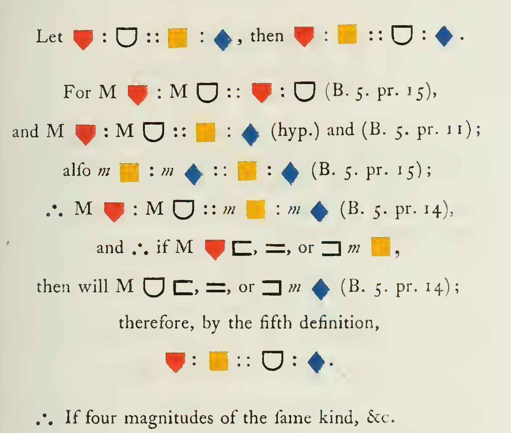

Proposition V.16 — Alternando (Alternate Proportion)¶
Book V, Proposition XVI. Theorem (Pickering p. 181 · G.276)
If four magnitudes of the same kind be proportionals, they are also proportionals when taken alternately.


Given. Let : ∷ : ;
then : ∷ : .
Demonstration (:just:`V.15`, :just:`V.11`, :just:`V.14`, :just:`V.def.5`).
For $M \cdot$ : $M \cdot$ ∷ : ([V.15]),
and ∴ $M \cdot$ : $M \cdot$ ∷ : (hyp. and [V.11]);
also $m \cdot$ : $m \cdot$ ∷ : ([V.15]),
∴ $M \cdot$ : $M \cdot$ ∷ $m \cdot$ : $m \cdot$ ([V.11]).
Hence if $M \cdot$ is ⊏, =, or ⊐ $m \cdot$ ,
then $M \cdot$ is correspondingly ⊏, =, or ⊐ $m \cdot$ ([V.14]);
∴ ([V.def.5]) : ∷ : . Q.E.D.
See Commentary on Proposition V.16.